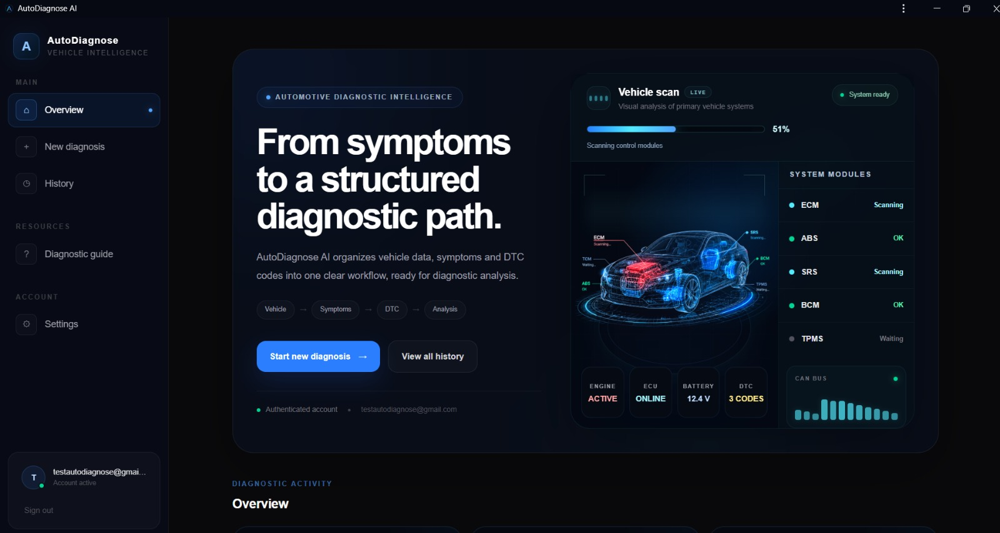

AutoDiagnose AI.
A full-stack diagnostic platform that combines vehicle data, symptoms, OBD-II / DTC information and adaptive questioning to identify probable causes.
Next.jsTypeScriptFastAPIPythonPostgreSQLPWA

From symptoms to a structured path.
01Vehicle context
Make, model, year, engine, fuel and mileage.
02Symptoms + DTC
Multiple symptoms and OBD-II codes.
03Adaptive questions
Follow-up questions refine probable causes.
04Scored results
Confidence-based diagnostic reasoning.
Desktop and mobile.


Authenticationmulti-user sessions
Persistent datauser-specific cases
REST APINext.js ↔ FastAPI
DeploymentVercel + Render